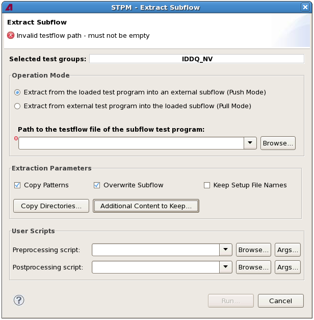

Extract Subflow dialog
The Extract Subflow dialog lets you set the parameters for extracting test groups from a test program into a subflow. Its options correspond to the parameters of the extract_subflow control file command.
The command supports both extracting test groups from an external MTP (master test program) into a subflow that is currently loaded or from a currently loaded MTP into an external subflow.

The dialog is opened by the Extract Selected command from the STPM menu. It contains these fields and options:
- Content error message: The message at the top of the dialog, just below the title,
notifies you of any errors or warnings caused by your settings, for example, an empty testflow
path:
 : This icon indicates an error. The error is noted in the message, and the offending
field or option is marked with the same icon. The Run button is disabled until the problem is
resolved.
: This icon indicates an error. The error is noted in the message, and the offending
field or option is marked with the same icon. The Run button is disabled until the problem is
resolved. : This icon indicates a warning. The problem is noted in the message, and the
offending field or option is marked with the same icon. You can, however, still click Run to
execute the command with this setting.
: This icon indicates a warning. The problem is noted in the message, and the
offending field or option is marked with the same icon. You can, however, still click Run to
execute the command with this setting.
- Selected Test Groups: The test groups that you have selected in the
testflow before choosing this command. These test groups will be extracted in push mode (if the
loaded test program is the MTP; see below) or replaced in pull mode (if test groups are
extracted from an external MTP).
This field corresponds to the test_groups parameter of the extract_subflow command.
- Operation Mode: Whether the test groups are extracted from the currently loaded test program
or into it:
- Push mode: This mode is used when the currently loaded test program is the MTP (master test program). The selected test groups are saved as an external test program (STP - single test program).
- Pull mode: This mode is used when the currently loaded test program is the MTP. The selected test groups are saved as an external test program.
- Path to the testflow file of the subflow test program: In push mode,
the name and path of the testflow file for the test program that is generated from the exported
test groups.
In pull mode, the field is named Path to the testflow file of the master test program and lets you specify the testflow file of the MTP from which the test groups are extracted and inserted into the loaded STP.
Clicking Browse lets you choose a testflow file from disk.
This field corresponds to the test_flow_file parameter of the extract_subflow command.
- Extraction Parameters: In this section, you specify the details of the extraction process:
- Copy Patterns: If this option is checked, the patterns from the MTP
copied to the STP. If it is unchecked, no patterns are copied and the pattern master file of
the STP refers to the patterns in the MTP.
This option corresponds to the copy_patterns parameter of the extract_subflow command.
- Overwrite Subflow: If this option is checked, any existing files
and directories with the same names as the extracted files may be overwritten. If it is
unchecked, existing files and directories may not be overwritten. In this case, the operation
stops with an error if files with the same name as an exported file already exist.
This option corresponds to the allow_overwrite parameter of the extract_subflow command.
- Keep Setup File Names: If this option is checked, extracted setups
have the same names in the STP as they have in the MTP. If it is unchecked, their names are
changed to match the name of the exported test program.
You can specify any subdirectories of the device directory except the standard directories testflow, timing, levels, configuration, vectors, and testtable.
This option corresponds to the keep_setup_file_names parameter of the extract_subflow command.
- Copy Directories: Clicking this button opens a dialog where you can
specify subdirectories of the MTP device directory that are also copied to the device
directory of the extracted subflow.
This option corresponds to the copy_static_content parameter of the extract_subflow command.
- Additional Content to Keep: Clicking this button opens the Keep Timing dialog where you can specify settings that are extracted even if they are not
used in the subflow. (By default, only settings that are used in the subflow are extracted
from the MTP.)
The options in the dialog correspond to the timing_mode, keep_wavetables, keep_tim_eqnsets, keep_specifications, levels_mode, keep_lev_eqnsets, pattern_mode, and keep_pattern_files parameters of the extract_subflow command.
- Copy Patterns: If this option is checked, the patterns from the MTP
copied to the STP. If it is unchecked, no patterns are copied and the pattern master file of
the STP refers to the patterns in the MTP.
- User Scripts: In this area, you can specify scripts that are executed
before or after the Extract Subflow command:
- Preprocessing script: You can specify any executable script to be
executed when you click Run, before the extract_subflow
command itself is executed.
Clicking Browse lets you choose a script file from disk.
Clicking Args lets you specify which arguments to pass to the script. (The script is assumed to know how to handle these arguments.)
- Postprocessing script: This is similar to Preprocessing script, except that the script is run after the extract_subflow command has been executed.
- Preprocessing script: You can specify any executable script to be
executed when you click Run, before the extract_subflow
command itself is executed.
- Run: Clicking this button performs the extract operation with the specified settings. The progress of the command is displayed in the STPM console view which is automatically opened.
Functional changes
- Introduced in SmarTest 7.2.2